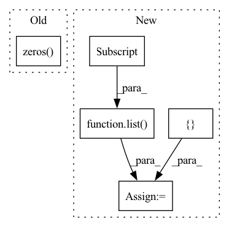

Pattern ID :13186

Before Change
nbatch = djast.shape[0]
if len(self.idx_col_perm) > 0:
tmp = torch.zeros(nbatch, 3, self.nelec,
self.nelec-1).to(self.device)
tmp[..., self.index_row, self.index_col-1] = djast
tmp[..., self.index_col, self.index_row] = -djast
return tmp[..., self.idx_col_perm].prod(-1).sum(1).sum(-1)
After Change
tmp[..., self.index_col, self.index_row] = -djast
return tmp[..., self.idx_col_perm].prod(-1).sum(-3).sum(-1)
else:
out_shape = list(
djast.shape[:-2]) + [self.nelec]
return torch.zeros(out_shape).to(self.device)
// def _partial_derivative_col_perm(self, djast):
In pattern: SUPERPATTERN
Frequency: 3
Non-data size: 5
Instances
Fragment ID: 44576488
Project Name: nlesc-jcer/qmctorch
Commit Name: 5addeca2d12e10ba72c91dbafcb1311d84711606
Time: 2020-11-13
Author: nicolas.gm.renaud@gmail.com
File Name: qmctorch/wavefunction/jastrows/two_body_jastrow_base.py
M Class Name: TwoBodyJastrowFactorBase
N Class Name: TwoBodyJastrowFactorBase
M Method Name: _partial_derivative_col_perm(2)
N Method Name: _partial_derivative_col_perm(2)
M Parent Class: nn.Module
N Parent Class: nn.Module
M File Name: qmctorch/wavefunction/jastrows/two_body_jastrow_base.py
N File Name: qmctorch/wavefunction/jastrows/two_body_jastrow_base.py
M Start Line: 381
M End Line: 389
N Start Line: 385
N End Line: 394
'>
Before Change
def differential(A, E, expm):
n = A.size(0)
M = torch.zeros(2*n, 2*n, dtype=A.dtype, device=A.device)
M[:n, :n] = A
M[n:, n:] = A
M[:n, n:] = E
return expm(M)[:n, n:]
After Change
def differential(A, E, f):
n = A.size(-1)
size_M = list(A.size()[:-2]) + [2*n, 2*n]
M = A.new_zeros(size_M)
M[..., :n, :n] = A
M[..., n:, n:] = A
M[..., :n, n:] = E
'>
Fragment ID: 44576489
Project Name: lezcano/geotorch
Commit Name: 13013d9c91cb3afcaa75f8a47b70f743450e4a08
Time: 2020-04-01
Author: lezcano-93@hotmail.com
File Name: mantorch/linalg/expm.py
M Class Name: AnonimousClass
N Class Name: AnonimousClass
M Method Name: differential(3)
N Method Name: differential(3)
M Parent Class:
N Parent Class:
M File Name: mantorch/linalg/expm.py
N File Name: mantorch/linalg/expm.py
M Start Line: 187
M End Line: 188
N Start Line: 264
N End Line: 270
'>
Before Change
user_len_list = np.full(inter_num, self.dataset.item_num)
interaction.set_additional_info(pos_len_list, user_len_list)
scores_row = torch.arange(inter_num).repeat(2)
padding_idx = torch.zeros(inter_num, dtype=torch.int64)
positive_idx = interaction[self.iid_field]
scores_col_after = torch.cat((padding_idx, positive_idx))
scores_col_before = torch.cat((positive_idx, padding_idx))
After Change
history_col = torch.cat(list(history_item))
positive_u = []
positive_i = []
for idx, uid in enumerate(uid_list):
uid = uid.item()
positive_u += [idx for i in range(self.uid2items_num[uid])]
positive_i += list(self.uid2positive_item[uid])
positive_u = torch.from_numpy(np.array(positive_u))
positive_i = torch.from_numpy(np.array(positive_i))
self.pr += self.step
'>
Fragment ID: 44576490
Project Name: rucaibox/recbole
Commit Name: a3596a230c1b34f77b50d21460d63996206cd55a
Time: 2021-07-15
Author: 2017202006@ruc.edu.cn
File Name: recbole/data/dataloader/general_dataloader.py
M Class Name: FullSortEvalDataLoader
N Class Name: FullSortEvalDataLoader
M Method Name: _next_batch_data(1)
N Method Name: _next_batch_data(1)
M Parent Class: AbstractDataLoader
N Parent Class: AbstractDataLoader
M File Name: recbole/data/dataloader/general_dataloader.py
N File Name: recbole/data/dataloader/general_dataloader.py
M Start Line: 225
M End Line: 256
N Start Line: 232
N End Line: 256